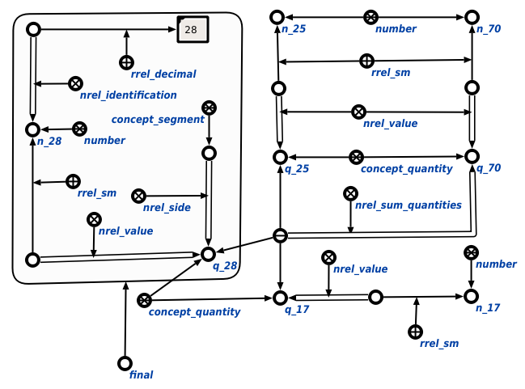

Задачей scp-программы вычисления математических выражений является вычисление математических выражений. Первым входным параметром данной scp-программы является математическое выражение, содержащее одну и более связок математических отношений, содержащих неизвестные параметры, вторым - множество, в которое будет включена цепочка значения величины или цепочка идентификации числа, посчитанная последней. В ходе выполнения программы явно указывается связь со следующими ключевыми узлами: запросом вычисления связки математического отношения; классами sc-действий, такими как успешно выполненное sc-действие, безуспешно выполненное sc-действие, инициированное sc-действие; множествами арифметических и тригонометрических операций; узлом sc-события появления в памяти входящей дуги, а также атрибутом шаг', поясняющим цепочку значения величины или цепочку идентификации числа, вычисленную последней. Ниже представлены результаты выполнения процедуры::
